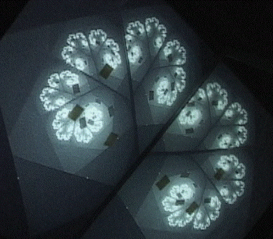
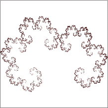
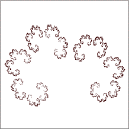

| Here is the videofeedback image we wish to synthesize by IFS. |
|  |
| We measure the source point coordinates p1 = (0, 0),
p2 = (2.2, 0), and p3 = (0, 2.6). |
| We measure the left side target point coordinates q1 = (.6, -.2),
q2 = (1.3, 1.2), and q3 = (-.8, 1). |
| We measure the right side
target point coordinates q1 = (6.9, -.4),
q2 = (6.3, .8), and q3 = (8, .5). |
| With these we find the IFS rules and picture |
| r | s | theta |
phi | e | f |
| .71 | .71 | 63 |
49 | .6 | -.2 |
| -.61 | .55 | -63 |
-51 | 6.9 | -.4 |
|
 | |
| To increase the gaps we subtract .02 from r and s of the first transformation, add .02 to r and
subtract .02 from s of the second transformation. |
| r | s | theta |
phi | e | f |
| .69 | .69 | 63 |
49 | .6 | -.2 |
| -.59 | .53 | -63 |
-51 | 6.9 | -.4 |
|
 | |
| In case the comparison with the picture on the top of the page is not so compelling,
here
is the videofeedback image with the brightness reduced to reveal only the limit. |